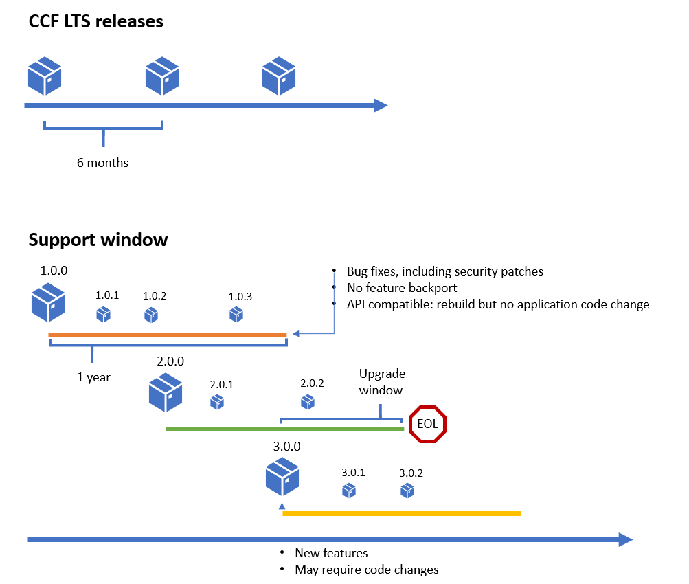

Release and compatibility policy#
API stability and versioning#
REST endpoints exposed by CCF itself fall into three categories:
User-facing API#
As defined under Built-ins.
These endpoints are expected to be quite stable across releases, but it is difficult for CCF itself to version them because its own versioning scheme may not be in-sync with a given application: release dates and numbers will differ. It is instead recommended that applications programmatically disable these endpoints as exposed by CCF now, and replace them with their own as illustrated in Default Endpoints. This is currently only supported for C++ applications.
CCF exposes its implementation of the user built-in endpoints as a public, versioned C++ API and application code can dispatch to the chosen implementation for each of its own versions.
For example:
Application version 1.2 -> CCF::commit_v1
Application version 1.3 -> CCF::commit_v1
Application version 1.4 -> CCF::commit_v1
New CCF release adds CCF::commit_v2
Application version 1.2 -> CCF::commit_v1
Application version 1.3 -> CCF::commit_v1
Application version 1.4 -> CCF::commit_v1
Application version 1.5 -> CCF::commit_v2
APIs use _v${INCREMENTING_INTEGER} as a symbol suffix, starting at 1. Symbol versions are connected with CCF releases by release notes “eg. CCF release X.Y.Z introduces call_v2”.
A subset of the C++ API is exposed to JavaScript applications, as detailed in JavaScript API. Symbols are not versioned as more mechanisms exist for backwards-compatible evolution. APIs, while they exist, are guaranteed to be backwards-compatible but may be deprecated and eventually removed.
Operator-facing API#
As defined under Operator RPC API.
This is the API used to monitor the network topology, memory usage, endpoint metrics etc. The intention is to keep this API compatible without explicit versioning, by making sure that all changes are strict additions (i.e. new fields, new arguments with default values that behave identically to the old call). Fields/input arguments will never be modified/deleted unless exceptionally and explicitly notified in advance to users.
Member-facing API#
As defined under Member RPC API.
Same as operator-facing API.
Operations compatibility#
Patches are compatible: nodes built from the same major release but different patch releases can run within the same service (backward and forward compatibility between these).
The last patch in a major release (
N.0.final) is compatible with the first patch of the next major release (N+1.0.0): nodes built against both versions can be run within the same service.Open-ended ledger backward compatibility: a ledger produced by version
N.0.x`can be read by all versions`> N.0.x`.Forward compatibility of the ledger across patches: a ledger produced by version
N.0.xcan be read by allN.0.*patches in the same major release.Snapshots are compatible across incremental major releases (going from
N.0.xtoN+1.0.x).
Tip
The compatibility_report.json file, available for every release indicates which other release(s) this release is compatible with.
The
live_compatibilitysection indicates which version this release can be upgraded from/upgrade to (see Code Upgrade).The
data_compatibilitysection indicates which version this release can recover from (using the ledger and snapshots) (see Disaster Recovery).
Note that if a version is not listed in the report, it does not necessarily mean that it is not compatible with the release. The report simply indicates that a suite of tests were run with a specific version to guarantee compatibility with this one.
Support policy#
In addition to the latest release, CCF aims to provide security patches and bugfixes on two long term support releases at any given time. These releases are guaranteed to be API-stable, but not ABI-stable. Applications will need to rebuild to pick up updates, but will not need to change their code.
From 2.0.0 onwards, LTS patches will be released no more frequently than monthly, with an exception for critical fixes. LTS patches will pick up third-party dependency patches systematically, as long as they have been out for more than 14 days at the time of the release, again with an exception for critical fixes.
A long term support release (LTS) will be supported for 1 year starting from its release date. That means that when a new LTS comes out, users effectively have a 6 months window to upgrade to the latest LTS.
REST API guarantees spelled out in the first section apply across releases, but new features, for example revisions of the User-facing C++ API or additions to the node API can only be introduced in a new release, never back-ported to an existing LTS.

Support calendar#
Major Release |
First Release Date |
End of Support Date |
|---|---|---|
1.0 |
April 30, 2021 |
June 30, 2022 |
2.0 |
May 17, 2022 |
June 1, 2023 |
3.0 |
November 24, 2022 |
November 24, 2023 |
4.0 |
May 2, 2023 |
May 2, 2024 |